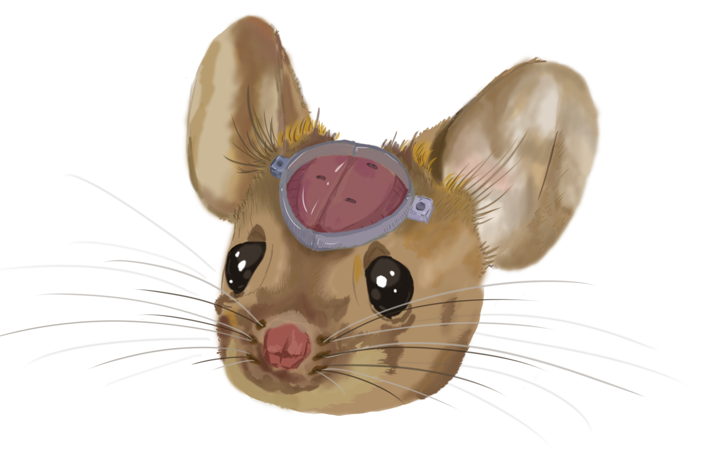
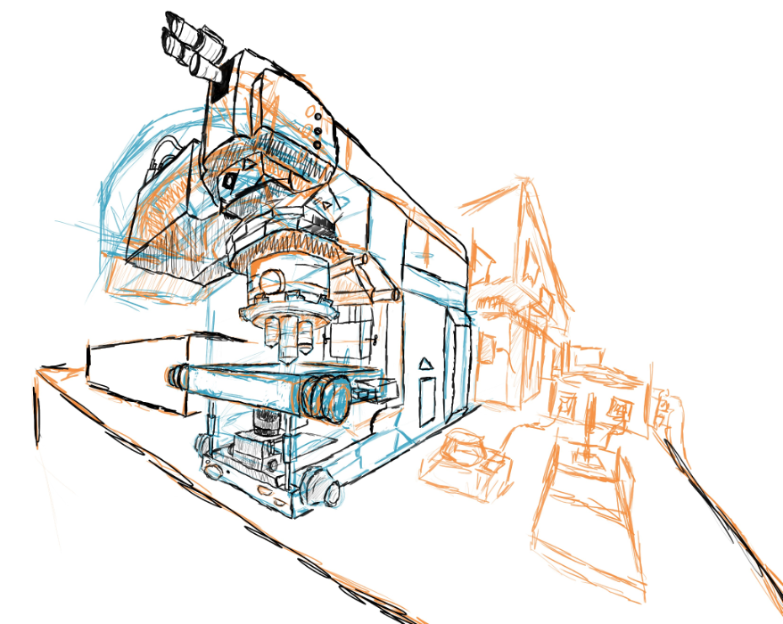
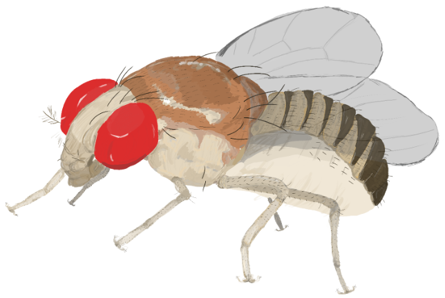

ORCiD: (link);
Google Scholar: (link)
I am currently in my early medical school / pre-graduate school years at Stanford. I am doing a mix of
wet lab and computational work with mice and humans. I primarily work with adult and pediatric epilepsy patients,
as well as patients with autism spectrum disorders.
Department of Bioengineering, Psychiatry
Stanford University

I started rotating in the
DLab in December of 2024. My rotation projects
included both mouse work (primarily using Neuropixels to record from the brain of mice), and human
work (including human transcriptomics and memory). All of the human work I was able to
be involved in was through the Human Neural Circuitry (HNC) program led by Deisseroth.
I really enjoyed the rotation, and felt like there were endless things to do in the lab,
so I joined right after in April 2025. My current work focuses on bridging mouse and human studies,
largely in the realm of social interaction and autism spectrum disorders.
Mouse with headbar doodle by me.
Department of Neurosurgery
Stanford School of Medicine

In the summer and autumn of 2024, I worked with
Dr. Ashwin Ramayya, doing computational projects
focusing on how the brain anticipates stimuli or, conversely, reacts to unexpected stimuli to encode prediction error.
The RLab had just started then, and I was an attendee of the inaugural lab meeting.
It was great to see the lab grow over those months. I am fortunate enough to continue working with Dr. Ramayya through
DLab collaborations.
Confocal doodle by me.
Center for Cellular and Molecular Therapeutics
Children's Hospital of Philadelphia

For most of undergrad at Penn I worked in the
Song Lab advised by Dr. Yuanquan Song. I primarily led
projects focused on axon regeneration after injury, particularly in a Drosophila model where injury was induced
via 2-photon laser ablation. The topics I focused on the most were how neuronal excitability and the biophysical interactions
between neurons and glia could alter regeneration.
Because of this focus on excitability, I also worked on a computational project with Dr. Yoichiro Mori attempting to
model the calcium dynamics in the growth cone of a regenerating neuron.
Fly doodle by me.
Please feel free to reach out to me with questions or ideas for collaboration. It would be a pleasure to hear from you.